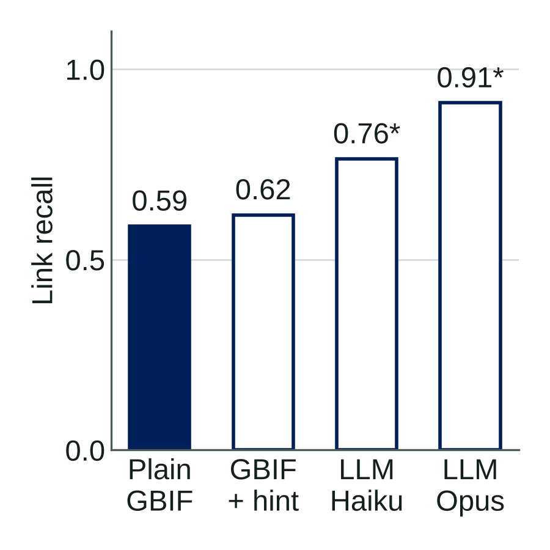

01 · Motivation
When an agent files a species, did it read the page, or copy a misreading?


An agent that quotes the OCR faithfully still files the wrong species.
02 · Methodology
Same page, three texts: the model points, code writes the value
Point, not write
Code finds the quote in line 2 and slices the value from the text. A quote that differs from the text is logged as a silent correction.
Agents: Claude Opus 5.5 and Gemini 4 Carbon. Design after Lei, Docherty & Cooper (2024): label before seeing model output.
03 · Results
Evidence is lost when the agent reads and when it links, not when it extracts
A · Same pages, three texts: OCR decides F1

B · 24 OCR versions: names intact predict F1

C · Linking 34 correctly read names

D · Spot the fake: which is printed in 1849?
Read right, linked wrong: Motacilla beema (1907) finds only the genus; today it is Motacilla flava.
04 · Protocol and Data
Pre-registered · frozen before the test pages · deviations logged
F1 per book, 95% page-bootstrap intervals; the two books are never pooled.
Data
Next: classical Chinese
 → 陶弘景
→ 陶弘景Bencao gangmu 本草綱目 manuscript: the model writes the modern character, right for search, wrong for the edition.
05 · Proposed Framework
Code owns the text; the model points and quotes
06 · Conclusion
- Finding. Library OCR cost a third of the values; a plain database lookup lost 14 of 34 correctly read names. Extraction held (0.93–0.98).
- For agent builders. Check that names survive OCR; let the model point and code write; test the database link on its own; agreement between models is not evidence.
- Next. Reeve's names; the classical Chinese test pages. Materials papers are untested.
Connect & Explore
A map of AI4S people, research,
companies and capital, read at source.
 LinkedIn
LinkedInDekun (Gloria) Sun on LinkedIn · @gloria_sun on X